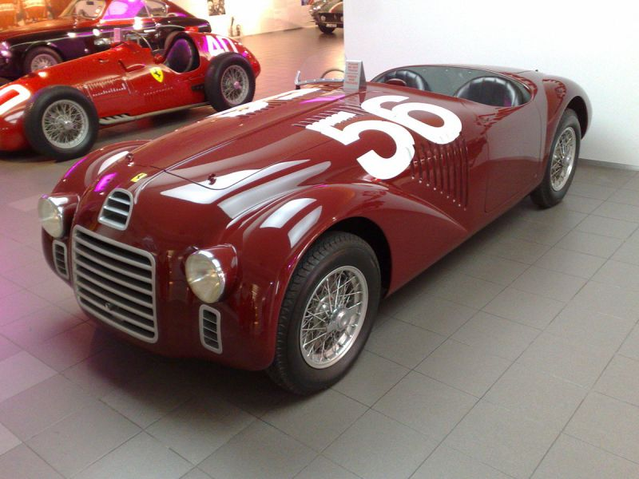
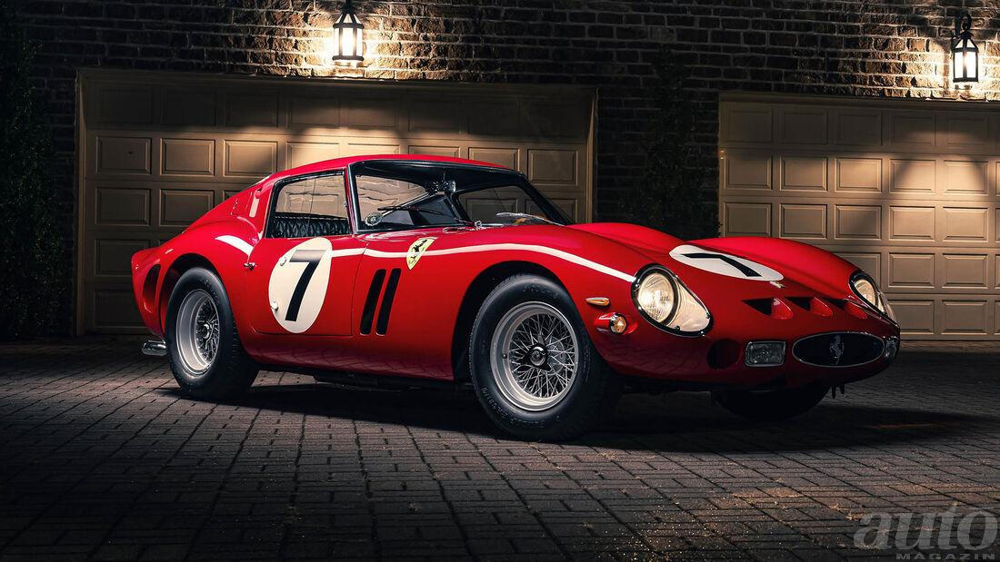
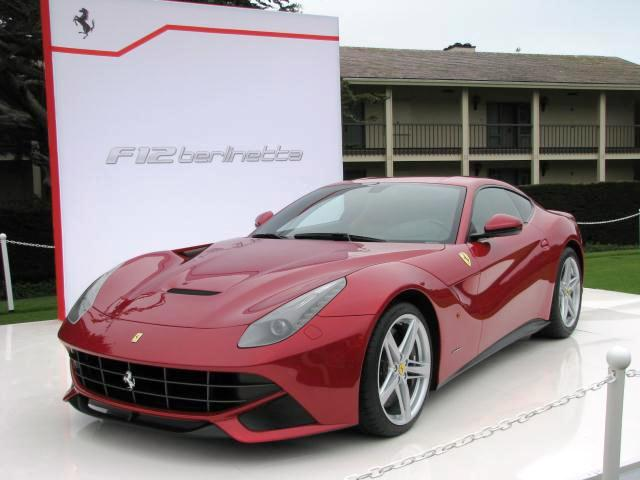
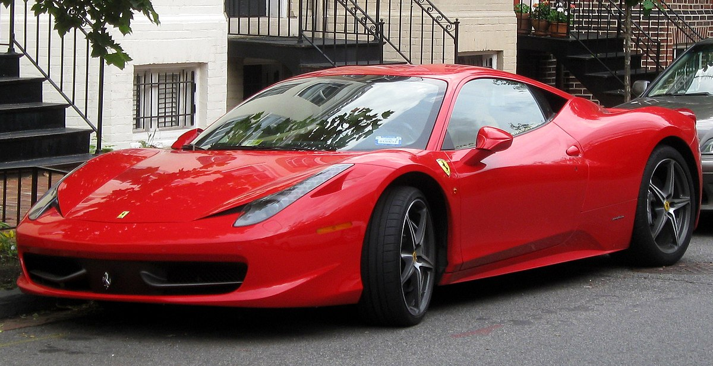
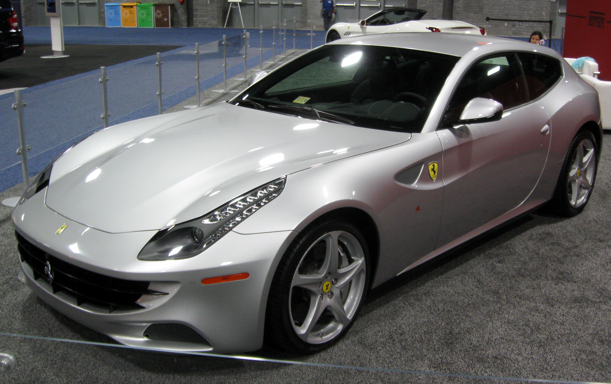
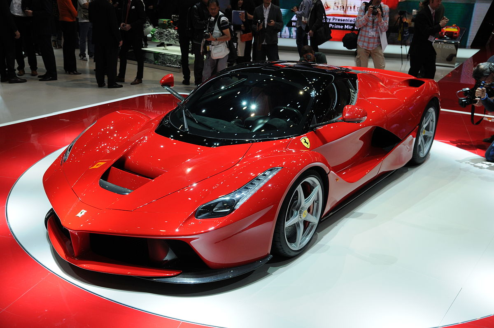

Horváth Bence Ferrari weblap
Alapítása
Az 1929-ben alapított céget amatőr versenyzők szponzorálására hozta létre Enzo Ferrari Modenában. Sok sikeres versenyzőt készítettek fel és versenyeztettek Alfa Romeókban, egészen 1938-ig. Ekkor Enzo Ferrarit az Alfa Romeo saját versenyrészlege élére nevezte ki.
1940-ben, amikor Enzo Ferrari felismerte, hogy szeretett csapatát, a Scuderiát az Alfa Romeo be akarja olvasztani, kilépett az Alfától és visszatért csapatához. Mivel jó ideig távol kellett maradnia a versenyektől, repülőgép-alkatrészeket és egyéb gépészeti termékeket gyártottak. A versenyeket a II. világháború is lehetetlenné tette. A gyár 1943-ban Maranellóba költözött, de 1944-ben lebombázták, és csak 1946-ra hozták helyre.

Az első kész ferrari
Az első közúti Ferrari, az 1,5 literes V12-es motorral szerelt 125S jelzésű modell 1947-ben készült el. A cél az volt, hogy a bevételből Enzo a versenyistállót támogassa. Az utcai autók is hamarosan népszerűek lettek. Ehhez hozzájárult az is, hogy a Ferrarik karosszériáján olyan híres formatervező cégek dolgoztak, mint a Pininfarina, a Bertone, a Ghia és a Touring. A Ferrari kultuszautó lett a fiatal multimilliomosok körében, a kis példányszámú szériákat a hosszú várakozási idő ellenére is elkapkodták.
A valaha volt legdrágább Ferrari modell
Az 1962-es évjáratú 330 LM versenyautót 60 millió dollárért kínálták, végül 51,7 millióért (az 17,96 milliárd forint!) kelt el. Ezzel ez lett a valaha volt legdrágább Ferrari. A korábbi rekordot egy 250 GTO tartotta, amely 2019 augusztusában 48,6 millió dollárért (átszámítva kb.)
Jelenlegi modellek
California |
F12 Berlinetta |
458 Spider |
.jpg) |
 |  |
458 Italia |
FF |
LaFerrari |
|  |  |  |